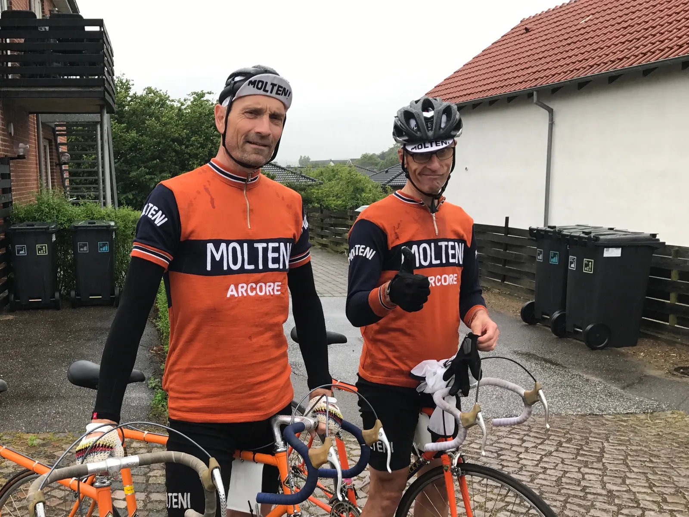
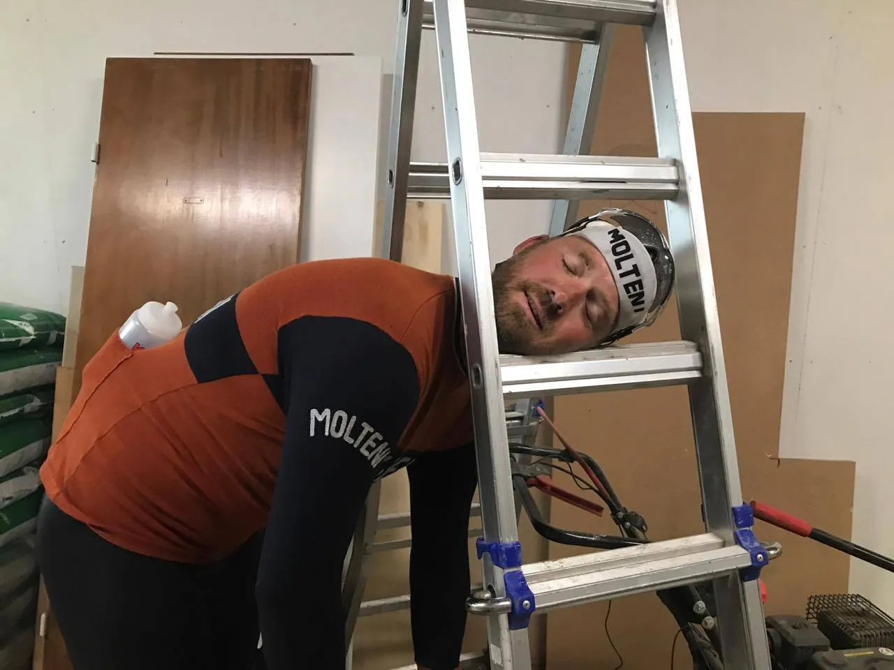

Expressimus Maximus: DGI-holdløb i Lund

Max Nielsen, også kaldet Expressimus Maximus, pløjede gennem sommerregnen og det bakkede landskab ved holdløbet i Lund. Hans dobbelte turbo sikredede holdet en sikker sejr*.
Et holdløb i silende sommerregn – det har vi prøvet før.

Kasper, Niels, Eigil, Jens og Max trillede ud på en opvarmningsrunde i regn og blæst. Det blev ved hele løbet. Men det forhindrede ikke holdet i at være optimistiske før starten.
– Vi starter hårdt ud, sætter farten op halvevejs og spurter det sidste stykke, lød taktikken fra Max inden starten.
Max var stadig lidt fortumlet efter den belgiske cocktail, som han med nødt og næppe nået at få indtaget før ankomst. Jens Ankerstjerne var lidt mere klar i hovedet, og uddybede taktikken lidt mere.
– I mod- og sidevinden kører vi rent rulleskift. På det lange stykke ned gennem skoven er der medvind og vejen dårlig i højre side, så der kører vi på én og én. Maxtager fronten og sætter turbo til, udtaler han med den præcision, som kun en garvet licensrytter kan analysere en rute.
Kaos, kage, kanel og kondivand
Mens Eigil og Niels var mødt tidligt frem, og nød et par kanelsnegle og en kondivand fra Brugens, kom Kasper direkte fra en træningslejr i Prag. Her havde han besøgt en lokal diætist, der havde serveret lyse tjekkeiske pilsnere for ham hele ugen.
Kasper havde glemt sin hjelm, Jens kom til tiden og Max var skide irriteret over, at der ingen kaffe var. Det skulle nok blive til et godt løb.
– Jeg må have noget kaffe. Jeg skal have kaffe inden et cykelløb, lød det letter panisk fra Max, det kører på højoktan belgisk øl og sort kaffe.
Et løb i rødt felt
Squadra Molteni blev sendt afsted lige i hælene på Michael Skelde fra Riis og Seier holdet. Det gav motivation, og første omgang blev kørt i et forrygende tempo. Kasper og Eigil lå tidligt og sprang over, men Max og Jens satte farten.
Første omgang på 14 km. bliver kørt på 22:04 minutter. 200 meter ude på anden omgang sprænger Kasper i luften under en af Jens’ dingerføringer. Han må opgive, og kører i Brugsen efter et par rigtige øl.
De to sidste omgange bliver kørt en smule langsommere, med omgangstider på hhv. 22:26 og 22:36. På sidste omgang giver Max den det sidste, og trodser de snigende kramper i baglåret.
Han kan dog ikke holde dem helt væk, og der må akrobatiske udstræk på cyklen til at holde dem væk. Det gav de lokale noget at kigge på.
– Pløsle så æ jen af min oransje jersi køe i fuld fart hen af æ vej. Æ tænt den må ha’ fåt jen i æ ræv, men så var’t bare Max det stråt uh å sjin cykål, udtaler en lokal gårdejer.
I mål er Squadra Molteni klare vindere af stålklassen. DGI’s korrupte pointsystem blev overbelastet, og der hersker stadig tvivl om, hvem der egentlig vandt.

Et super godt løb
Tusind tak til Peter Meinert og DGI for et super løb på en god rute. Efter løbet var der grillpølser og vand til alle, og der blev udvekslet gode cykelhistorier efter løbet.
Du kan også læse nogle af vores beretninger fra tidligere holdløb i Lund.
* Den endelige slut tid lød på 1:07:20, og DGI rapportere et kontroversielt resultat, der viser Squadra Molteni på en samlet 7. plads. Der er indgivet klage.